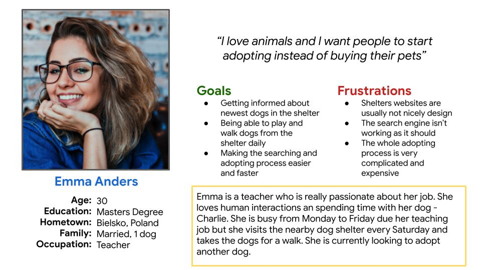
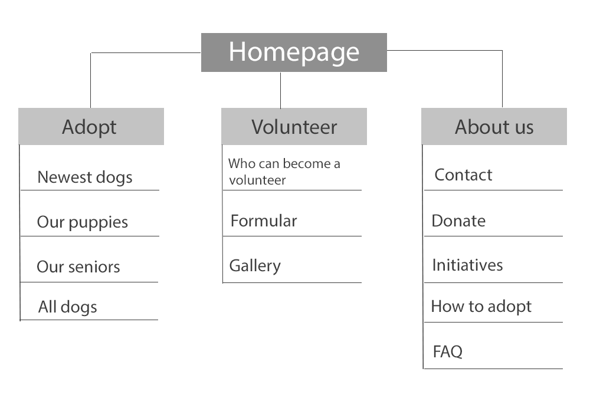

Dog shelter website
"I love animals and I wish people would start adopting instead of buying their pets"
Click here to see the prototype
• Summary:
• The product
Reksio dog shelter is a website where you can find your four pawed best friend.
No matter what type of dog you are looking for, we have them all just one click away. You can also foster or take the dog for a walk.
• The problem
Available animal shelter websites have cluttered design and it’s not easy to search for a specific breed because most of them are laking search engine.
• The goal
Designing an user friendly dog shelter website with clear navigation and quick and efficient search engine.
• User pain points:
Design:
Animal shelter websites are usually poorly designed.
Search engine:
The search process is not fast and efficient enough
Adoption process:
Adoption process is rather long and difficult to go through.
I conducted user interviews, which I then turned into empathy maps to better understand the target user and their needs.
I discovered that many target users are paying big attention to the design of a website.
The users getting often frustrated if the site is cluttered and when they are not able to find things on it.
They were also complaining on the adoption flow to not be clear and rather complicated. After those interviews, I created a persona and defined 3 main pain points.
• Problem statement

Emma is an animal enthusiast who needs a good search engine on the shelter website
because she wants to find the animal who will be a perfect fit to her family.
• User journey map and site map
I created a user journey map of Emma’s experience using the site to help identify possible pain points and improvement opportunities.
To view the map click here
I decided to make the website as easy as possible with only three main categories.
My main focus was to make the navigation easy and quick as well as the adoption process to be clear for everyone.

• Startig the design:
● Paper wireframes
● Digital wireframes
● Low-fidelity prototype
● Usability studies
• Paper wireframes

Next, I sketched out paper wireframes for the two main screens on my website, keeping the user pain points
about the design, search engine and adoption process in mind.
Because people nowadays use all sorts of devices,
I started working on different screen version in order to make the website responsive.
• Digital wireframes
Moving from paper into digital wireframes made me realize what are the main things I want to focus on.
For me it was: a nice big hero image, large buttons and clear search engine.
I have also wanted users to create their own accounts.
• Low Low-fidelity prototype
To create a low-fidelity prototype I connected all of the screens involved in the primary user flow
of searching for a dog and booking a walk.
At this point I have received feedback from my friends
and other designers so I have decided to follow their suggestions and implement a few changes to the high-fidelity prototype.
• Usability study: findings
1. Search engine
The search engine was showing all available dogs, not a specific breed or age.
2. Calendar
User wanted to be able to book a walk with the dog more than once.
3. Favorites
Users were loving the “add to favorites” option
• Mockups
Based on the insights from the usability study, I made changes to improve the search engine.
I have added “popular filter” option to help users narrow down they search to a specific breed or age.
I also decided to make the “add to favorites” option to be easily noticeable.
I put white hearts next to every dog picture - once an user clicked on the heart, the dog was automatically added to his cart.
You can find the prototype here.
• Accessibility considerations
1. I used headings with different sized text for clear visual hierarchy.
2. I used large buttons and I added filters that helps the users find what they are looking for faster.
3.The design colors are accessible for colour-blind users
• Takeaways
Impact:
Our target users shared that the design was intuitive to navigate through,
more engaging with the images and demonstrated a clear visual hierarchy.
• What I learned:
I learned that even a small design change can have a big impact on the user experience.
The most important takeaway for me is to always focus on the user needs, not on what I think would look good.